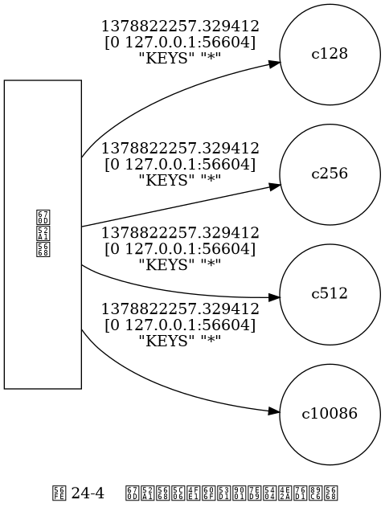

向监视器发送命令信息¶
服务器在每次处理命令请求之前，
都会调用 replicationFeedMonitors 函数，
由这个函数将被处理命令请求的相关信息发送给各个监视器。
以下是 replicationFeedMonitors 函数的伪代码定义，
函数首先根据传入的参数创建信息，
然后将信息发送给所有监视器：
def replicationFeedMonitors(client, monitors, dbid, argv, argc):
# 根据执行命令的客户端、当前数据库的号码、命令参数、命令参数个数等参数
# 创建要发送给各个监视器的信息
msg = create_message(client, dbid, argv, argc)
# 遍历所有监视器
for monitor in monitors:
# 将信息发送给监视器
send_message(monitor, msg)
举个例子，
假设服务器在时间 1378822257.329412 ，
根据 IP 为 127.0.0.1 、端口号为 56604 的客户端发送的命令请求，
对 0 号数据库执行命令 KEYS * ，
那么服务器将创建以下信息：
1378822257.329412 [0 127.0.0.1:56604] "KEYS" "*"
如果服务器 monitors 链表的当前状态如图 24-3 所示，
那么服务器会分别将信息发送给 c128 、 c256 、 c512 和 c10086 四个监视器，
如图 24-4 所示。
